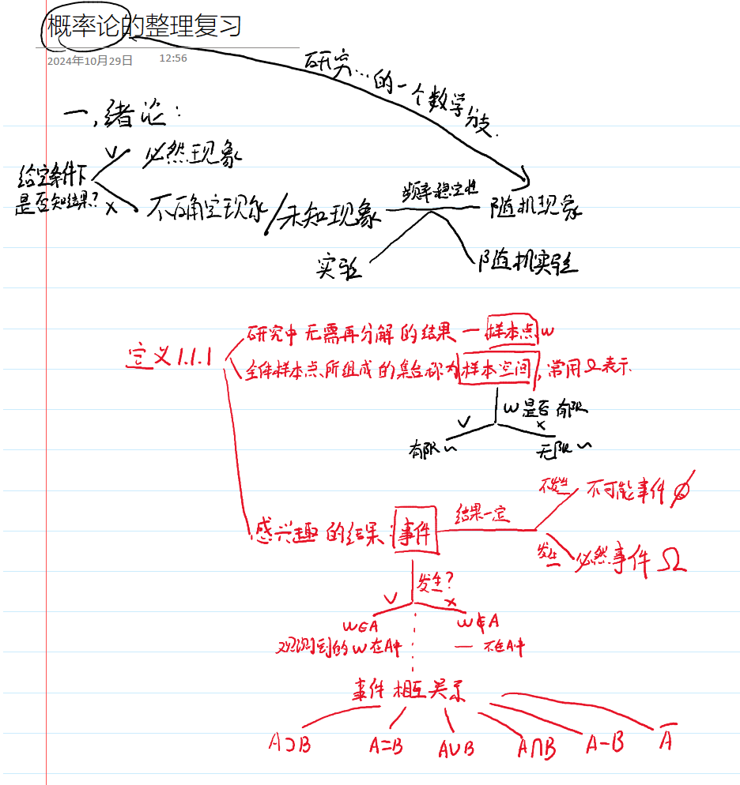
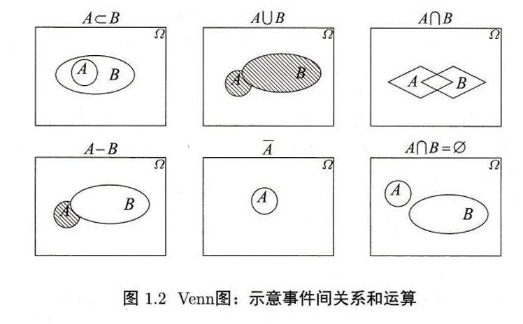

概率论-第一章绪论
1.1随机现象及基本概念
1.1.1必然现象、随机现象、样本空间


定义 1.1.2 【事件不相容】
若事件 $A, B$ 满足 $A \cap B = \varnothing$，称事件 $A$ 和 $B$ 不相容。
定义 1.1.3【事件类的交并以及事件列】
设 $I$ 为集合，且对任意 $i \in I$，$A_i$ 是事件，称：
为事件类{$A_i:i \in I$}之并；
称：
为事件类{$A_i:i \in I$}之交。
事件列
定义 1.1.4【上下极限定义】
对于事件列 $\{A_n\}$，说：
- 上极限：
- 下极限：
不相容时 $\limsup_{n \to \infty} A_n = \liminf_{n \to \infty} A_n = \varnothing$，相容时 $\limsup_{n \to \infty} A_n = \liminf_{n \to \infty} A_n = lim_{n \to \infty} A_n$。
定理 1.1.?【上下极限包含关系】
定理 1.1.1【交并的补运算】
设 $I$ 为集合，且对任意 $i \in I$，$A_i$ 为事件，则：
证明：
实际上：
同理：
定义 1.1.5【σ 代数】
如果集合族具有下列性质：
- 规范性：$\Omega \in \mathscr{F}$；
- 余(补)运算封闭性：若 $A \in \mathscr{F}$，则 $\bar{A} \in \mathscr{F}$；
- 可列并运算封闭性：若 $A_n \in \mathscr{F}, \forall n \in \mathbb{N}$，则 $\bigcup_{n=1}^{\infty} A_n \in \mathscr{F}$；
则称 $\Omega$ 上的事件族 $\mathscr{F}$ 为 $\sigma$ 代数。
定理 1.1.2【σ 代数的性质】
设 $\mathscr{F}$ 为事件集，则如下性质成立：
- $\varnothing \in \mathscr{F}$；
- 可列交运算封闭性：若 $A_n \in \mathscr{F}, \forall n \in \mathbb{N}$，则 $\bigcap_{n=1}^{\infty} A_n \in \mathscr{F}$；
- 有限并运算封闭性：若 $A_n \in \mathscr{F}, \forall n \in \mathbb{N}$，则 $\bigcup_{n=1}^{k} A_n \in \mathscr{F}$；
- 差运算封闭性：若 $A, B \in \mathscr{F}$，则 $A - B \in \mathscr{F}$。
定义 1.1.6【生成事件域】
称所有包含 $A$ 的事件集之交为 $A$ 生成的事件域，记为 $\sigma(A)$。
定义 1.1.7【Boral集和Boral集类】
设 $\Omega = \mathbb{R}, \mathscr{P} = \{(-\infty, x): -\infty < x < \infty\}$，称 $\sigma(\mathscr{P}) = \mathscr{B}$ 为 波莱尔(Boral) 集类，其中的集合称为 Boral 集。
补充：
- 增集合列 $A_n$：若 $A_n \subset A_{n+1}$，称为 增集合列。
定义 1.1.8【单调类】
若集合族 $\mathcal{A}$ 满足：
- $\Omega \in \mathcal{A}$；
- 对于真差运算封闭，即当 $A, B \in \mathcal{A}$ 且 $A \subset B$ 时，$B \setminus A \in \mathcal{A}$；
- 对于增集约之并运算封闭，即对于增集合列 $\{A_n\}$ 有 $\bigcup_{n=1}^{\infty}A_n \in \mathcal{A}$。
则称 $\mathcal{A}$ 为 $\Omega$ 上的 单调类 或 $\lambda$类。
显然，对于事件类 $\mathcal{A}$，记 $\lambda(\mathcal{A})$ 表示所有包含 $\mathcal{A}$ 的 $\lambda$ 类的交集，称之为 $\mathcal{A}$ 生成的 $\lambda$ 类。由引理 1.1.7 知道，$\lambda(\mathcal{A})$ 是包含 $\mathcal{A}$ 的最小 $\lambda$ 类，即若 $\mathcal{C} \supset \mathcal{A}$ 且 $\mathcal{C}$ 为 $\lambda$ 类，则有 $\lambda(\mathcal{A}) \subset \mathcal{C}$。
补充引理
这里为了证明单调类定理，也为了方便未来利用$\lambda类和\sigma类$做逻辑推理，先引入一些必要的引理。
引理 1.1.5
样本空间 $\Omega$ 上的任意多个事件域的交还是事件域。
证明
设 $D$ 为指标集，且对于任意 $i \in D$，$\mathcal{F}_i$ 为事件域，只需验证 $\mathcal{F} = \bigcap_{i \in D} \mathcal{F}_i$ 满足事件域的定义。
显然，对于任意 $i \in D$，都有 $\Omega \in \mathcal{F}_i$，由交运算的定义知：
即定义 1.1.5 的性质 1° 成立；
若 $A \in \mathcal{F}$，则对于任意 $i \in D$，都有 $A \in \mathcal{F}_i$，由事件域的补事件运算封闭性知 $A^c \in \mathcal{F}_i$，再由交运算的定义知 $A^c \in \mathcal{F}$，即定义 1.1.5 的性质 2° 成立；
若 $A_n \in \mathcal{F}$，则对于任意 $i \in D$，都有 $A_n \in \mathcal{F}_i$，再由事件域的可列并运算封闭性得 $\bigcup_{n=1}^\infty A_n \in \mathcal{F}_i$，所以 $\bigcup_{n=1}^\infty A_n \in \mathcal{F}$，即定义 1.1.5 的性质 3° 成立。
因此 $\mathcal{F}$ 为事件域。
引理 1.1.6
若 $\mathcal{A}$ 为 $\Omega$ 上的事件域，则 $\mathcal{A}$ 为 $\lambda$ 类。
证明
由于 $\mathcal{A}$ 具有规范性、对减运算的封闭性和对可列并运算的封闭性，因此它为 $\lambda$ 类。
引理 1.1.7
任意多个 $\Omega$ 上的 $\lambda$ 类之交还是 $\lambda$ 类。
证明
假设 $\mathcal{A}_\alpha$ 为 $\lambda$ 类，其中 $\alpha$ 为下标集 $D$ 中元素。
规范性
由 $\Omega \in \mathcal{A}_\alpha$ 知：对差集运算的封闭性
若 $A, B \in \bigcap_{\alpha \in D} \mathcal{A}_\alpha$，且 $A \subseteq B$，由 $A, B \in \mathcal{A}_\alpha$ 知 $B - A \in \mathcal{A}_\alpha$，即：对增集序列的封闭性
若增集合序列 $\{A_n\} \subseteq \bigcap_{\alpha \in D} \mathcal{A}_\alpha$，则 $\{A_n\} \subseteq \mathcal{A}_\alpha$，进而 $\bigcup_{n=1}^\infty A_n \in \mathcal{A}_\alpha$，即：综上，由 (1.13) 至 (1.15) 知 $\bigcap_{\alpha \in D} \mathcal{A}_\alpha$ 为 $\lambda$ 类。
引理 1.1.8
若 $\Omega$ 的子集构成的集合类 $\mathcal{A}$ 对交运算封闭，即：
则 $\lambda(\mathcal{A})$ 对交运算封闭，即：
证明
对于任意 $B \in \mathcal{A}$，记：
由 (1.16) 知 $\mathcal{C}_B \supseteq \mathcal{A}$，且 $\mathcal{C}_B$ 为 $\lambda$ 类。因此：
即：
类似地，对于任意 $A \in \lambda(\mathcal{A})$，记：
由 (1.18) 可得 $\mathcal{E}_A \supseteq \lambda(\mathcal{A})$，即 (1.17) 成立。
因此，$\lambda(\mathcal{A})$ 对交运算封闭。
引理 1.1.9
假设 $\xi$ 为从 $\Omega$ 到 $\mathbb{R}^n$ 上的映射，则对于任何 $B, B_n \subseteq \mathbb{R}^n$ 有：
证明
对于 $\xi^{-1}(\overline{B}) = \overline{\xi^{-1}(B)}$：
实际上，即结论 (1) 成立。
对于 $\xi^{-1}\left(\bigcup_n B_n\right) = \bigcup_n \xi^{-1}(B_n)$：
类似地，即结论 (2) 成立。
证明完毕。
1.2 两个概型
定义1.2.1：【古典概型定义】
如果样本空间 $\Omega$ 满足如下条件：
- $\Omega$ 中只有有限多的样本点；
- 每个样本点出现的可能性相等。
则 $\Omega$ 为古典概型。
定理 1.2.1
在古典概型中，事件A的概率
古典概型的特点：
- 方法论：
- 加法原理
- 乘法原理
- 常用问题：
- 重排列问题
- 排列问题
- 组合问题
- 占位问题
- 生日问题
- 抽屉问题
- 球放问题
- 配对问题
定义1.2.2【几何概型】
若 $\Omega \subset \mathbb{R}^n$ 可度量，且 $0 < m(\Omega) < +\infty$，则对于事件 $A$ 的任意部分，定义：
满足上述抽象模型的为几何概型。
几何概型的特点：
- 正确使用几何模型：
- 剖面所有特型。
- 多维性：
- 相互独立 or 正交。